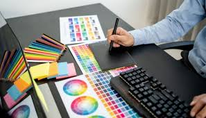
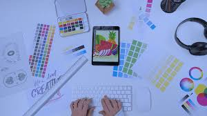

Escolhemos a área de Design Gráfico por ser uma profissão que une criatividade, imaginação e comunicação visual. É uma área que permite transformar ideias em projetos reais, criando soluções visuais que impactam pessoas e marcas.

O designer gráfico é responsável por desenvolver logotipos, identidades visuais, artes para redes sociais, cartazes, banners, embalagens e diversos materiais que ajudam empresas e organizações a transmitirem suas mensagens de forma clara e atrativa.
• Cria logotipos e identidades visuais.
• Desenvolve artes para redes sociais.
• Produz materiais publicitários e promocionais.
• Cria layouts para sites e aplicativos.
• Trabalha com edição de imagens e composição visual.

Escolhemos essa área porque acreditamos que a criatividade e a imaginação podem criar projetos incríveis e transmitir emoções através da arte visual. O Design Gráfico mostra como uma simples ideia pode se transformar em algo profissional, útil e inspirador para muitas pessoas.